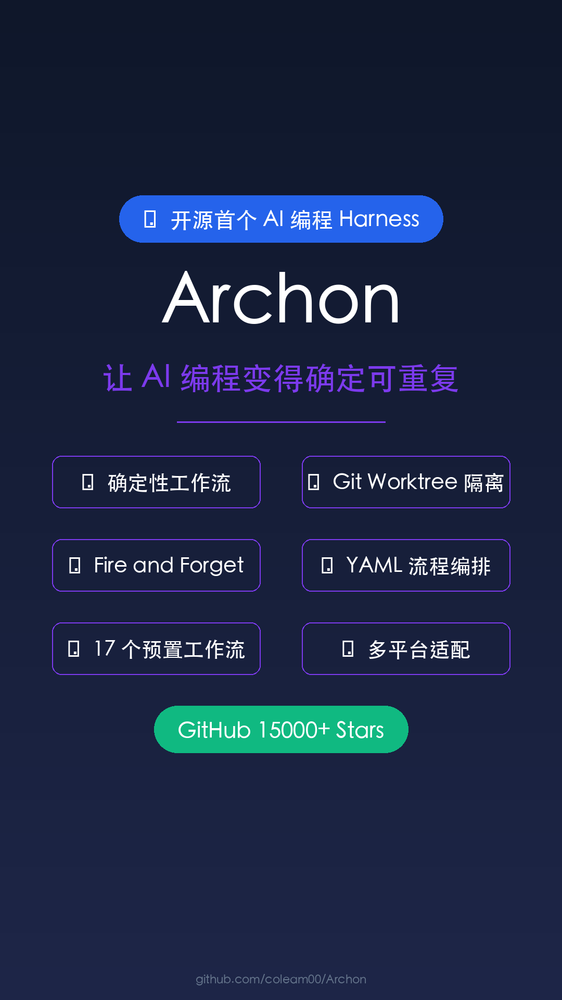

加载中...
让 AI 编程变得
确定、
可重复、
可控制
curl -fsSL https://archon.diy/install | bash
让 AI 编程变得
理解 Archon 在开发工具栈中的位置
强大的功能，让 AI 编程变得可控
同样的流程，每次都一样。告别随机性，让 AI 编程结果可预测。
5个任务并行跑也不冲突。每个任务在独立的工作目录中运行。
丢给它任务，回来就是 PR。真正的自动化，释放你的双手。
17个预置工作流，开箱即用。也可以自定义 YAML 配置。
想怎么用就怎么用
YAML 配置，简单直观
点击图片查看大图，支持缩放、旋转、幻灯片播放

Archon AI 编程工具
无论你是谁，都能从 Archon 受益
需要高效代码生成的程序员
需要规范 AI 编程流程
需要快速迭代产品
想学习 AI 编程